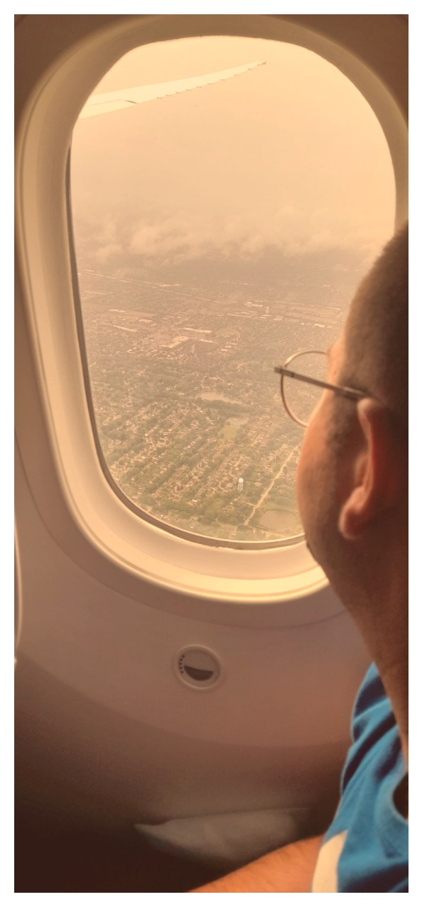

Τώρα που πια έχεις ενηλικιωθεί, ας μαζέψουμε αυτά που μαζί μάθαμε, αλλάζοντας κάποια από αυτά στην πορεία, ανάλογα με τα χρώματα του ουρανού και τις πλημμύρες που έρχονται.
Έτσι είναι, γιε μου· ετοιμάσου για τις πλημμύρες που σίγουρα έρχονται, έστω κι αν σήμερα περνούμε ξηρασία.
Ετοιμάσου για τη μοναξιά, ενώ οι φίλοι σου δίπλα πίνουν το ποτό τους και γελούν με τις ιστορίες που περάσατε στα τεράστια χρόνια της εφηβείας.
Σαν είσαι έτοιμος για τα σκοτεινά βράδια που διαρκούν μια βδομάδα, θα τα περνάς μέσα σε λιακάδα και φως και τραγούδι, μέσα σε μια στιγμή.
Με αισιοδοξία να αντιμετωπίζεις τον κόσμο με καλοσύνη και ευγένεια.
Παράλληλα, να μην ξεχνάς ότι ο κόσμος δεν είναι αγγελικά φτιαγμένος.
Να χαιρετάς, να γελάς και να συγκινείσαι.
Να είσαι πάντοτε αληθινός και να παραμένεις δυνατός στα αισθήματά σου, πιστός στην αγκαλιά της μάνας σου, στην παρέα του παπά σου και στην αβάσταχτη αγάπη της αδελφής σου.
Κράτα τα σαν κομποσκοίνι γύρω από τον καρπό σου, έτσι που κάθε κτύπος της καρδιάς σου να σε θυμίζει ότι το αίμα σου ρέει σε εμάς που σε αγαπούμε πάνω από τον εαυτό μας.
Να ξυπνάς και να ευγνωμονείς την πρώτη εικόνα στα μάτια σου, έστω κι αν είναι ένας τοίχος σε μια χώρα μακρινή.
Να νιώθεις την ευλογία για το δώρο που σου δόθηκε.
Ξύπνα, όρμα πάνω και μην φοβάσαι να βάλεις μεγάλους στόχους.
Να θυμάσαι ότι για μένα αυτά που για άλλους είναι δεδομένα, ήταν μεγάλοι στόχοι.
Όπως ένα πιάτο φαγητό.
Θυμάσαι που πατούσες στο πίσω μέρος των ποδιών μου, μετά στη ράχη μου και μετά στους ώμους μου;
Τώρα ήρθε η ώρα να βγεις πιο ψηλά.
Θα πρέπει να δημιουργήσεις σιγά-σιγά τα σκαλοπάτια σου και μετά να τα ανεβαίνεις προς τα πάνω.
Όταν αγχώνεσαι γιατί πας σε μέρη που δεν γνωρίζεις, κατάλαβε ότι κάνεις το ορθό,
γιατί ξεφεύγεις από τις συνήθειές σου και μαθαίνεις νέα πράγματα, εξελίσσεσαι και γνωρίζεις νέες πτυχές του εαυτού σου.
Και να θυμάσαι, κάποτε πρέπει να κατεβούμε λίγα σκαλιά για να πάρουμε φόρα και να περάσουμε τα εμπόδια που υπάρχουν στο μυαλό μας.
Να θυμάσαι, η ζωή σε κοιτά πίσω σαν καθρέφτης.
Τρώγε σωστά, φτιάξε τα μαλλιά σου, ξυρίσου, πρόσεχε το σώμα σου, φρόντιζε τα δόντια σου και χαμογέλα στον καθρέφτη.
Τότε αυτός θα σου χαμογελάσει πίσω.
Να παραμείνεις απλός και ποτέ μην αναζητήσεις ευτυχία από υλικά αγαθά.
Είναι απάτη.
Η αναποδιά, γιε μου, κρύβει ευκαιρίες, και η επιτυχία παγίδες.
Μην παρασύρεσαι από τη στιγμή. Απογοητεύσου για λίγο, χάρηκες για λίγο και μετά προχώρα, βάζοντας το ένα πόδι μπροστά από το άλλο.
Και όταν βρεθείς σε νέους τόπους, νοητικούς και πραγματικούς, να μην ξεχνάς από πού ξεκίνησες.
Μην ξεχάσεις ότι είσαι το μωρό μας που μας ζητούσες «την μπύλα και το τούι σου».
Απόλαυσε το ταξίδι σου, γιε μου.
Και κράτα μας πλάι σου όπου κι αν πας.
Σε αγαπώ.

Σχόλια